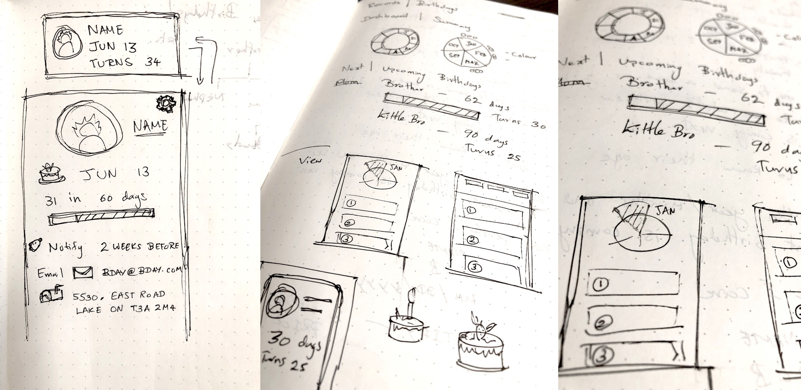
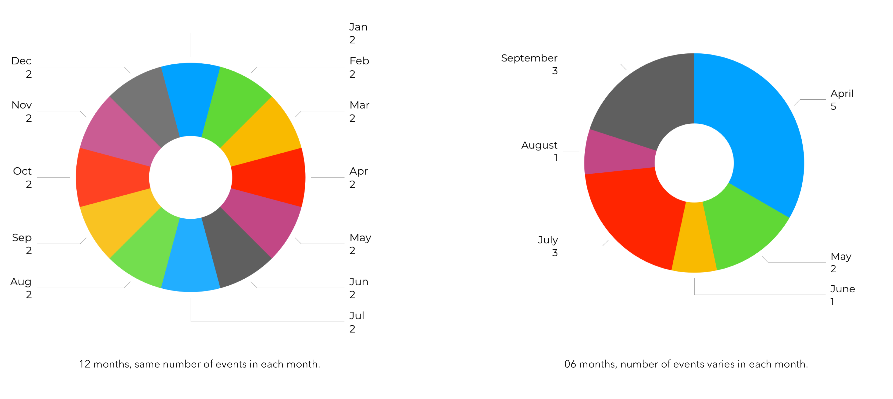

OnTrack A mobile application design that helps you keep track of important annual events such as anniversaries and birthdays. Timeline: Winter 2018 Type: Interaction Design, UI/UX Motivation It All Started With Just Birthdays As an expat with half of my family and friends on the other side of the world, keeping track of all the special upcoming birthdays has always been very important to me. Given the distance, I need to act well in advance for an event if I would want to send a gift or a greeting card on time. Using a calendar for this purpose did not provide the necessary sense of urgency. So I decided to design a mobile app to keep track of birthdays. The Design Process Generative User Research I started my design process by talking to potential users of the app. My initial goal was to understand how people keep track of their important birthdays. Therefore, I started with the following research questions. How people keep track of birthdays, what tools they use? What are the user goals with the above tools? What are the main pain points? Keeping Track Of Important Annual Events After talking to potential users I found out that they all needed to keep track of important annual days, not just birthdays. As a result, I increased the focus of the project from tracking birthdays to tracking annual events. The dates users were keen to keep track of had one thing in common. They happened annually. During the generative research phase, I also discovered the following. Most users remember the dates of key events (birthdays of immediate family) or have a general sense of the part of the year that they occur (First week of March etc.) Users prefer a glanceable overview of upcoming events. This helps them reassure specific upcoming dates and that they have enough time to prepare for the event Calendars do not provide a proper overview of the upcoming events Calendars lack the sense of urgency to act on time for an upcoming event Interaction Design Process Shneiderman’s Mantra I started the interaction design process keeping the following points in mind. A clear glanceable overview Provide a sense of urgency A summary of the next upcoming event Overview First, Zoom and Filter, then Details-on-Demand  I began by sketching designs that kept the Shneiderman’s Mantra as the basis. Circular vs Linear Iteration 01 - Circular Overview In the first design iteration I used a Circle Chart to provide an overview of the upcoming events. Each slice of the circle represented a month of the year and the area was determined by the number of events in a given month. Each slice of the circle represent a month and the area of a slice represents the number of events in that month.  Feedback from users showed that using a circle chart provided a glanceable summary of the events. However, users found that it did not provide a clear sense of a timeline. Based on the user feedback I revisited the design with a timeline-based concept in mind. Towards A Glanceable Overview Iteration 02 - Linear Overview I used a linear graph in the second iteration to provide an overview of future events. Each section represented a month and the width of a section corresponded to the number of events in that month. … count down timer provided a sense of urgency … I designed the intro screen to provide a summary of the next upcoming event. User feedback on early designs showed that a sense of urgency was created by using a countdown timer to show the number of days before the next event. Reflection & Takeaways The motivation behind this project came from a personal frustration I faced when keeping track of important birthdays of my extended family. During the design process, it was exciting to discover that most users shared the same problem and it was not just limited to birthdays. User feedback helped me expand the project’s focus to design a better solution to address pain points when keeping track of important annual events. Early user feedback immensely helped with the interaction model design and a glanceable view of future events. If time was not a constraint, I would have planned to conduct more follow up interviews to obtain user feedback on actions taken through the app. Providing a countdown till the next event created a sense of urgency for most users but I would like to test the design with more people to test if it makes them anxious. I would also like to test with different typography and font colours to highlight the key items of event summary and test the designs with potential users. Screens were designed in Sketch and animated in Principle. Party Icons made by srip from FlatIcon.